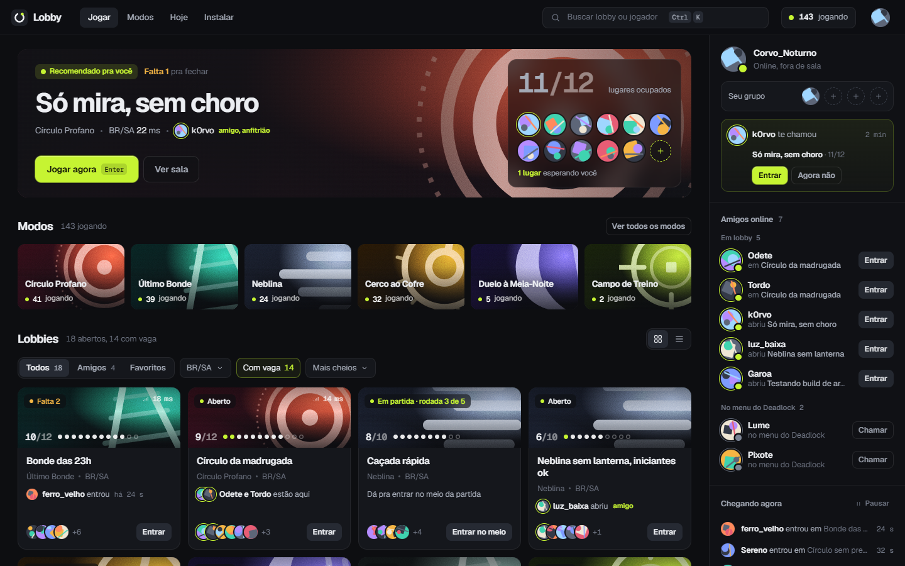
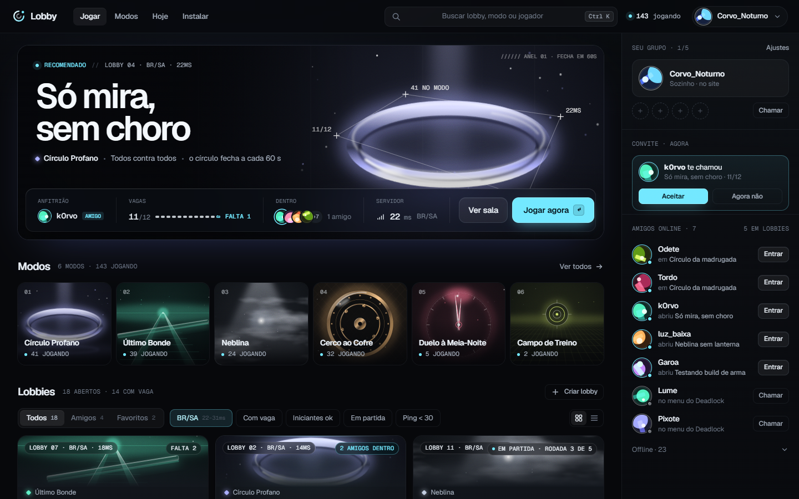
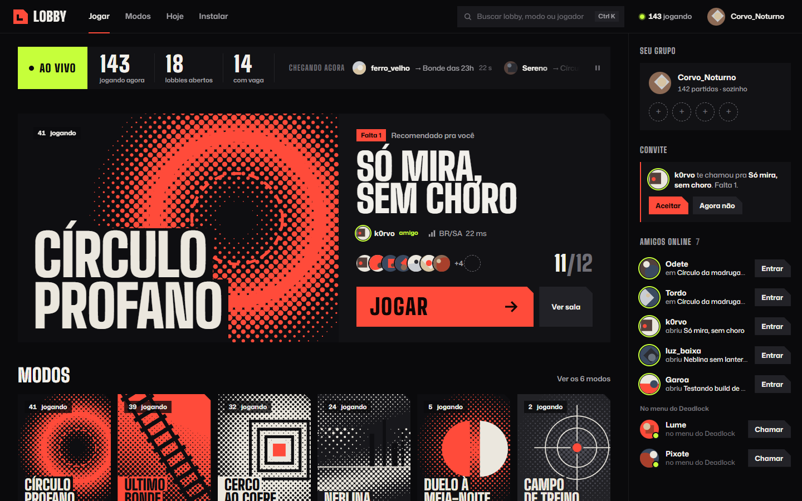
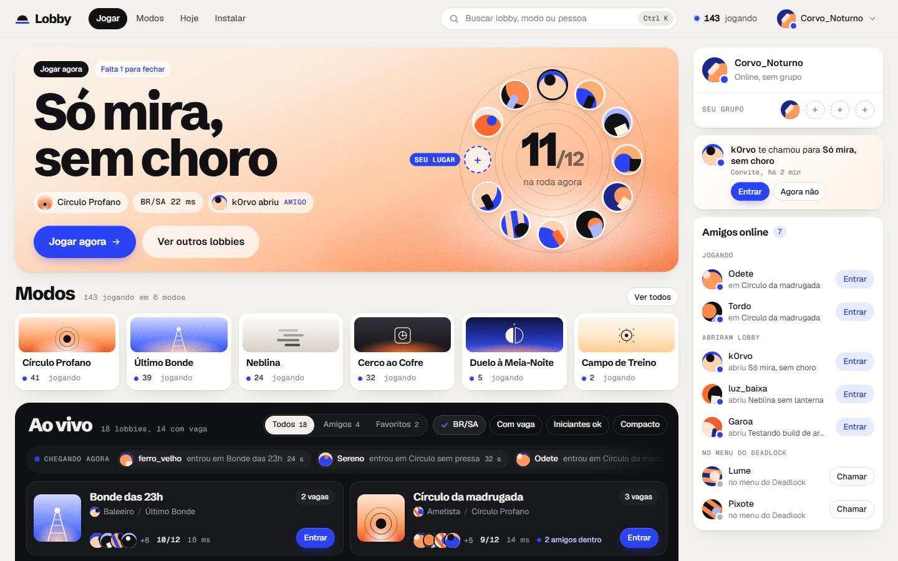

v7: quatro peles, mesmo esqueleto
Mesmo conteúdo e mesma estrutura de cliente de jogo; muda só a pele. Base: docs/design/pesquisa-profunda/04-sintese.md.




Mesmo conteúdo e mesma estrutura de cliente de jogo; muda só a pele. Base: docs/design/pesquisa-profunda/04-sintese.md.



